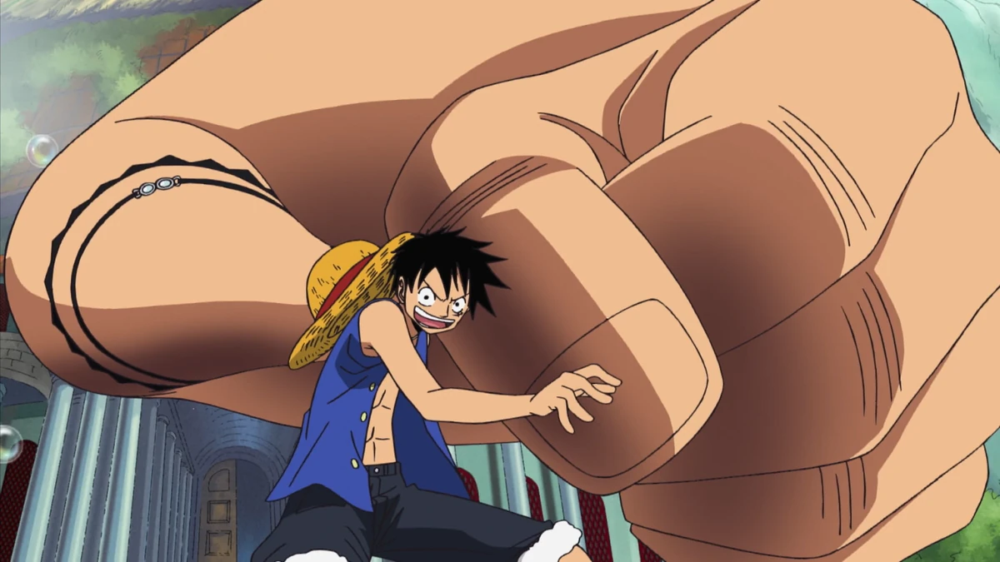
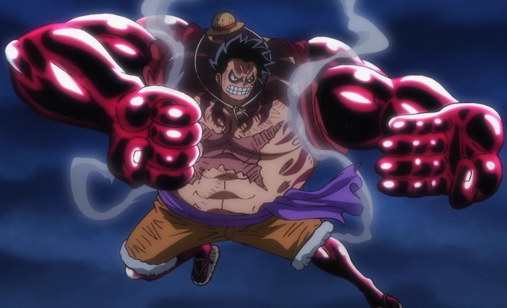
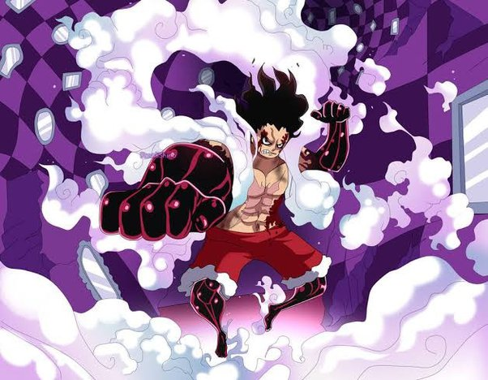

Gomu Gomu no Mi
The Gomu Gomu no Mi is a Paramecia-type Devil Fruit that grants the user a body of rubber. Originally the fruit was called Hito Hito no Mi, Model: Nika and was classified as a Mythical Zoan that allows one to transform into the legendary "Sun God" Nika. Luffy uses various techniques to utilize his rubber powers, one of his most popular techniques is "Gomu Gomu no Pistol" in which luffy throws a punch that is on par with the strength of a pistol.
Luffy's Gears
| Gear | Description and Powers | Image |
|---|---|---|
| Gear Second | Increases Luffy's blood flow, which provides him with more oxygen and nutrients. This makes him much faster and more powerful. |  |
| Gear Third | This technique allows Luffy to inflate a body part and enchance the strenth of himself. Luffy bites into his thumb join and blows hard into his bones, which inflates his arm. He is then able to transfer the air through his entire body. When luffy blows tons of air into his body that when all the air is focused on a single limb, they become the size of a giants. |  |
| Gear Fourth: Bounce Man | Combines rubbery body and Haki to increase power and defense. Luffy's body becomes much larger in size, with his upper body and legs covered in Haki. As a side effect he is incapable of standing still on the ground and instead constanly bounces. |  |
| Gear Fourth: Snake Man | Similar to Bounce man in that the rubbery body and Haki are utilized for this form - but this transformation has more of a focus on speed. He gains the ability to use an attack called "Python" which constanly changes directions of attack and hunts down opponents, while contiuosly accelerating the longer the attack lasts. |  |
| Gear Fifth | The awakened form of the devil fruit, which strengthens the user's rubbery body. It also allows the user the ability to manipulate and transform their enviornment, aloowing them to fight in any way they please. For example Luffy can turn the ground and other inanimate objects into rubber at his will. |  |